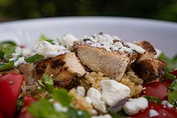
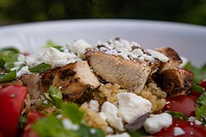

Lappilainen ravintola Oula
Lounaslista:
Lounas maksaa 11 euroa, sisältää lounaan ja ruokajuoman (vesi, kotikalja, maito)
- Maanantai
Juusto-vihanneskeittoa ja kokin sämpylä
Paistettua lohta, sinappikastiketta, tilliperunoita ja kasviksia
Marjakiisseliä ja hunajakermavaahtoa
- Tiistai
Kana-fetajustosalaattia ja kokin sämpylä
Paistettua punakampelaa, pinaattikastiketta ja perunamuusia
Pannukakkua, mansikkahilloa ja kermavaahtoa
- Keskiviikko
Tomaatti-yrttikeittoa ja kokin sämpylä
Kalkkunaleikettä, BBQ-kastiketta, riisiä ja kasviksia
Omenapiirakkaa ja vaniljakastiketta
- Torstai
Rapukeittoa ja kokin sämpylä
Poronkäristystä, perunamuusia, puolukkahilloa ja suolakurkkuja
Hedelmäsalaattia ja kinuskikastiketta
- Perjantai
Savulohisalaatti ja kokin sämpylä
Naudan paahtopaistia, punaviinikastiketta, kermaperunat ja kasviksia
Suklaamousse
 


 Kuva 1: Pixabay.
Kuva 1: Pixabay.
Kuva 2: Pixabay.
Kuva 3: Pixabay.
Kuva 4: https://www.kodinkuvalehti.fi/reseptit/liha-padat-ja-laatikot/poronkaristys. Ninna Lindström.
Kuva 5: Pixabay.
| Aukioloajat |
| MA-PE: |
10:30-15:00 |
| LA: |
11:00-15:00 |
| à la carte -lista PE ja LA: |
17:00-21:00 |
Yhteystiedot
Ravintola Oula
Hallituskatu 12
96200 ROVANIEMI
Puh. (016) 555 4755
Fax (016) 555 4756
E-Mail: ravintola.oula@oulanet.fi